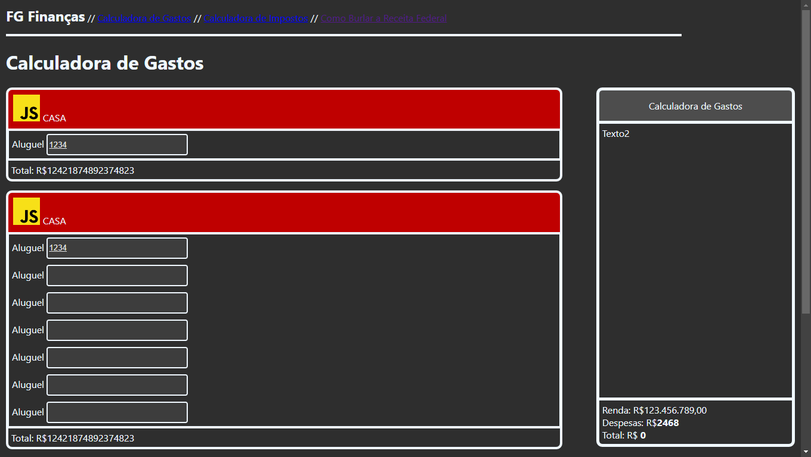
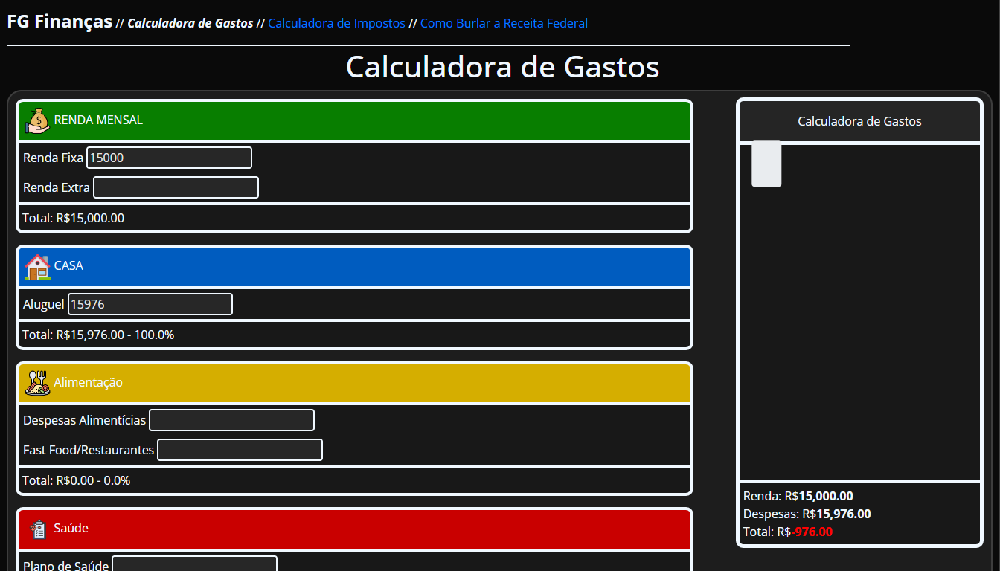

A FG Finanças é uma pseudo-corporação encarregada de desenvolver diversas ferramentas relacionadas a manejamento de
dinheiro e
educação financeira. Ela foi "fundada" como parte do projeto
Hackathon 2025 da
Ctrl+Play, uma competição entre várias unidades Ctrl+Play com o tema de
Educação
Financeira.
O nome "FG Finanças" foi escolhido como referência a ambos o Foguete
da logo da Ctrl+Play e também para referenciar o como as ferramentas da FG fariam sua poupança "decolar como um
foguete."
A ideia da criação de uma Calculadora de Gastos em lugar de outras alternativas como um fórum informativo ou um tipo
de jogo originou de duas ideias:
-
Originalidade: Forúms/Blogs informativos existem a tona. Você pode encontrar várias páginas falando sobre
educação financeira, investimentos e diversos outros tópicos com uma simples pesquisa, adicionar outro a lista
não
é nosso objetivo. Queremos fazer algo que não só informe o usuário, mas também o ajude.
-
Complexidade: Outra coisa que veio a mente é que não deveriamos só fazer um projeto simples, e sim impor um
desafio a nós mesmos buscando criar algo mais complexo. Algumas ideias como uma calculadora de Imposto de Renda
ou
um conta-gastos que geraria um sumário de suas despesas ao fim do mês vieram em mente, porém a resolução final
foi
em uma Calculadora de Gastos/Despesas Mensais que tem um equilíbrio entre complexidade, utilidade e
simplicidade.
-
Utilidade: O controle de despesas e até mesmo o monitoramento de saída de dinheiro infelizmente pode ser algo
complexo ou até mesmo desconhecido para vários. O simples ato de poder facilmente inserir essa informação em um
site e rapidamente descobrir sua maior fonte de déficit pode com certeza ajudar muito aqueles que não tem
experiência, tempo ou simplesmente buscam uma alternativa com menos chance de falha.
Graças a todos esses fatores e um pouco de pensamento, pensamos em desenvolver a Calculadora de Gastos.
A calculadora em si já passou por várias iterações diferentes, com um design mudando a cada dia e muito tempo
investido no "back-end" que enquanto simples, causava muitos problemas. No começo, era uma simples página com um
fundo cinza e várias caixas, e apenas depois foi tomando a forma que tem hoje em dia.

Primeira iteração minimamente funcional da calculadora.
Com uma combinação de tempo, paciência e determinação, um dia o primeiro protótipo completamente funcional da
calculadora foi completo. O que ele podia fazer? Apenas pegar a informação que você inseriu e fazer os cálculos
básicos. Coisas como a sidebar
("Sumário") ou o sugestor
(texto
que aparece caso você exceda o limite de gasto em
tal campo e tenha uma sobra baixa) estavam completamente ausentes em versões passadas, sendo adicionados
recentemente.

Primeiro protótipo funcional da calculadora.
Após um bom tempo em desenvolvimento, a calculadora agora se encontra em um estado considerado completo e 100%
funcional. Porém, a FG Finanças tem outros planos para o futuro próximo, desenvolvendo mais ferramentas como a
Calculadora de Investimentos. Como ela acabará é algo que ninguém sabe no momento, mas
esperamos que acabe bem.